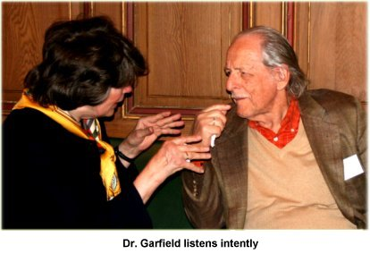
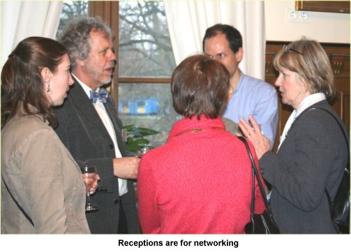
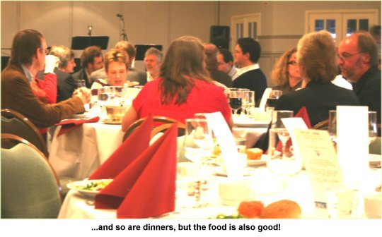

Vol. 11 No. 3, April 2006
| Vol. 11 No. 3, April 2006 | ||||
This third Nordic conference, organized by the University of Lund Libraries, was an extremely successful event, with over 200 participants from twenty-one countries. Though most of the participants were from the Nordic countries, the overall 'feel' was of a truly international gathering. The organizers are to be congratulated for impeccable management of the conference, the excellent food, and arrangements overall.
The speakers were a mixture of well-known figures, such as Dr. Eugene Garfield and Jean-Claude Guedon, along with representatives of the Nordic countries, who are well known in their own fields, such as Mathias Klang of the University of Gothenburg and Bo-Christer Björk of Hanken in Helsinki, and others from around the world, equally well known in their specialisms, such as Mark Patterson of the Public Library of Science and Mark McCabe of Georgia Institute of Technology.
Rather than simply go through the list of contributions and report briefly what was said, we have chosen to pull together some of the overall ideas that were presented and debated.
First, different models of the scholarly communication process were offered, from the commercial to the 'public good' concept. Derk Haank, CEO of Springer Science+Business, offered the 'Open Choice' strategy of the company, whereby, for a payment of $3,000 per paper, those papers would be offered on open access. Well, that might be fine for the very high cost subject areas such as fundamental physics, astronomy and pharmaceutical chemistry, but Mr. Haank is in 'cloud cuckoo land' if he believes that the average humanities or social science faculty member is going to find that amount of money from his or her grant to pay for publication. It also seemed that everybody offering authors' fee option forgot that this money should be coming from the same source as present subscription fees - university (or other research institution) budgets, and that the only thing it does is 'closing' the access on the entry rather than on the point of use. 'Open Choice' comes across as a public relations strategy, rather than as a serious alternative to other open access models.
Unfortunately, the research councils and higher education bodies, especially in the UK, appear to be ready to accept the 'author pays' model as the only model worth supporting. Astrid Wissenburg of the Economic and Social Research Council in the UK, was unable to say at the conference what the new research councils' policy on open access is going to be, but rumour has it that 'author payments' built into research grants will be the main instrument. She expressed worries that this might affect those who will be working on a basis other than research grants, and one can predict that those worries will come to fruition. On the international level, the inequalities among countries will be even more striking than at present. Mark McCabe of the Georgia Institute of Technology addressed this issue from an economic modelling standpoint, demonstrating that Haank's $3,000 per paper made little sense, since, economically, price ought to relate to demand and papers offered to high readership journals should be charged more than those offered to low readership journals. The economic models supporting his argument were well founded and impossible to dispute. Maximum social value was open on both sides: input as well as output, and it was entirely incompatible with any profit maximizing model. In response to a question, he also noted that the 'subsidised journal' model, operated, among others, by Information Research, maximises social value and is the model that ought to be supported by the research councils. Research funding agencies, please note!
Another paper with an 'economic' flavour was that by Bo-Christer Björk, on benchmarking scientific journals from an author viewpoint. Björk presented a model of the factors that could affect choice of outlet for a scientific paper (the net value of submission) and illustrated this with reference to journals in the field of information technology in construction. He elaborated the characteristics of journals from an author point of view under the headings of infrastructure, i.e., what kinds of aids to the author exist, such as tracking systems for showing the current state of a submission; readership, involving such things as the size of the readership of a journal and citations to it; prestige, measured, for example by the Journal Impact Factor; and performance, in terms of, for example, delays in publication and quality of the review process. He suggested that authors should be evaluating journals from this perspective and choosing the optimum journal to which to submit rather than necessarily striving continuously for the top-ranked journal (almost by definition, these journals have the longest delays in publication). He also emphasized that there is no one 'fit for all' journal value or choice model and that each decision is based on the current need of an individual researcher. So, young researchers starting their career and eager to build up the publication list ought to opt for journals with a shorter processing period than the top-ranked journals, which may take up to three years (the case for MIS Quarterly) to publish.
The Public Library of Science was discussed by Mark Patterson who explored the barriers to and drivers behind open access publishing. He noted that the drivers were mixed in character, including not only ventures of the same kind as PloS, but also the efforts being made by some of the commercial publishers and the policies of funding agencies such as the Wellcome Foundation and the National Institutes of Health. He also set out the success of the first journal to be published by PloS - Biology, noting that it now had a Journal Impact Factor of 13.9, which makes it the top-ranked journal in its group. (Just as an aside, the second ranked journal (FASEB Journal) has a JIF of 6.820). PLoS operates on an 'author pays' model, but waives its charges for those who cannot pay. This is mainly possible because they received start-up support from charitable foundations totally $9,000,000. (Would that Information Research was in such a happy position.)
Another model was that of the Scielo Open Access as implemented in Brazil. Lewis Joel Greene discussed one of the main problems experienced by open access journals under Scielo - that of getting their existence noted. Of the 115 journals in Scielo, only 35 are covered by either Web of Science or PubMed. However, when their existence is known, usage soars. He noted that, between 2002 and 2005, usage of Scielo journals (as measured only by 'hits') by developed country sites increased by only 1% in 2002, 5% in 2003, 32% in 2004, and 62% in 2005. The picture is even more dramatic for hits from developing countries, although Brazil alone accounted for more than 23,000,000 of the total of 24,000,000 hits in 2005.
Making maximum use of the information available in open access sources was the subject of John Wilbanks's paper on the NeuroCommons. The idea behind the NeuroCommons is that facts in what are, to all intents and purposes, large databases of textual data, can be harvested and compared with one another, using natural language processing software (commercial publishers often ban the use of such software on their sites, hence the need for open access) to create a Semantic Web of neurological research. Thus, rather than needing to dig into the research literature, the neurological scientist would be able to discover from the NeuroCommons, what facts have been shown to be associated in which studies and with what degree of validity and reliability. This 're-use' of data, it would seem, would also maximise social value. This was very enthusiastic and competent presentation that also inspired many members of the audience.
Many open access systems operate under the Creative Commons licensing scheme (as does Information Research) and Mathias Klang, of the University of Gothenburg, set out the basic principles of the scheme. He noted that there was a general misunderstanding of the relationship between the Creative Commons licence and copyright as preserved in national laws. Essentially, the answer was that, if a Creative Commons licence is infringed, the author will still have the right to pursue the offender under his or her national copyright legislation. In other words, under whatever terms of the licence, the author retains full copyright. There does not have to be any additional provision allowing or requiring usage of Creative Commons in the existing national legislation.
One of the alternatives to open access publishing is open archiving and two speakers addressed this issue: Jean-Claude Guedon proposed that repositories could develop into primary publication sources as authors found that their work was accessible and cited by doing so. He noted that in some fields, with well established repositories (fundamental physics for example), citations to journal articles were now being cited well before the journal actually published the item, because of their appearance in the repository. He suggested that rather than pre-publication peer review operating, process of open post-publication review could emerge in these repositorie.
How one persuades people initially to contribute to repositories is a prevailing problem and Alma Swan partly addressed this issue in her presentation. She believed that the mandating of deposition by universities is key to the success of repositories: however, even where mandates exist, those managing the repository (often librarians) are having difficulty in getting acceptance. Swan presented her ideas within an evolutionary science analogy and suggested that the open access model, in its various forms, was likely to emerge successful from the evolutionary battle.
Finally, what does all of this have to do with the assessment of individuals or academic units? Eugene Garfield returned to one of his main interests, the identification of 'Nobel class' scientists, showing, for the ISI data for 1967, that scientists appearing in the top 50 list, by number of citations, included a very significant number of Nobel laureates. He noted, however, that the Nobel committee does not rely upon citation data in its deliberations and urged, generally, than in research assessment, numerical indicators of performance, such as citation counts and the Journal Impact Factors, should be taken for what they are, indicators, and need the support of qualitative data - just as the Nobel Committee relies on such data in making its awards. Curiously, however, in answer to a question, he suggested that the research councils in the UK could replace the existing Research Assessment Exercise procedures, by a metrics-driven approach.
The other speaker on this general topic of assessment was Grant Lewison, who presented some alterative metrics to those derived from citation that would be supplementary measures of overall impact of research. For health related information he took into account the government policy documents, standards, clinical guidelines, textbooks, as well as mass media, such as newspapers and television or radio broadcasts. The impact of research on these particular types of documents and information sources manifests in different ways that require specific approach and interpretation of measurements. It is worth conducting these measurements as they reflect a broad impact of research institutions and researchers not only on scholarly community but on the society as a whole, sometimes in the ways that affect the majority of inhabitants. Lewison called for wider research on this impact in other countries that would allow comparisons on the international level.
In all, as we said at the start, this was a very good conference and we look forward to the next!
the authors, 2006. Last updated: 28 April, 2006 |
|